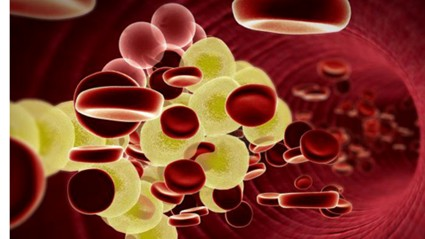

SEGUNDA UNIDAD · INFORME 08
Práctica de laboratorio N.º 08
Primera práctica de la segunda unidad.
Abrir informe →Aqui podras encontrar los informes de Bioquímica de la 2 unidad :D.
Descubramos, analizemos y comprendamos la bioquímica desde una perspectiva experimental.

Primera práctica de la segunda unidad.
Abrir informe →